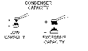
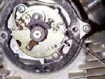
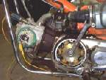
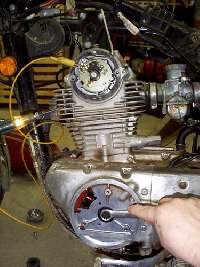
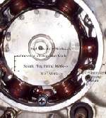
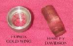
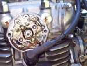
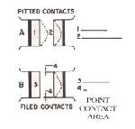
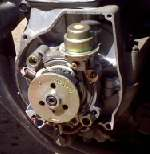
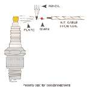

Well, if you are one of those wicked people who don't bother to maintain your points ignitioned bike you will find the spark of your fire does indeed go out. So what do we do to prevent this?
Points Ignition is on it's way out, but there are still a lot of them out there. Most engines (but not all) made after 1980 have an electronic ignition and no points. Most engines (but not all) made before 1980 have points. To find out look under the points cover. this cover will usually have two or three screws holding it on. On most single and twin cylinder engines it is usually on the cylinder head, right or left side. On most four cylinder engines it is usually on the crank end and again it can be on either the right or left side but it seems mostly on the right. Three cylinder engines seem to be mostly on the left.
If there is any doubt as to the condition of the points, replace them. Sometimes a good looking set of points can cause a funny misfire that can only be cured by a new set. If the points are pitted badly you will not be able to get an accurate gap setting. Replace them. I have spent way too many hours trying to make a used set of points work, in vain hope of saving $10-$15. Save your time and nerves, buy a new set of points. Interestingly enough, it's been my experience that condensers almost never wear out. I have found maybe four or five bad condensers in the last 35 years.
Everybody pushes you to buy them, but I never replace them unless they test bad. They make little cheap testers (at least they used too) that work quite good. A rough and ready way to test them is to connect the pig tail to the positive terminal of a 12 volt battery and the body to the negative terminal. This charges them up. Now ground the pig tail to the body and, if it is good, you should see a nice fat spark. In some cases the condenser will have two leads. One goes to ground and one to the points hot wire. Connect them by the color coding of the wires. If both wires have the same color, they can be connected either way. Same way to test. One wire to positive and one wire to negative to charge and then touch them together. You should get a nice spark if they are good.
The condenser keeps the points from arcing when they open. The condenser can be anywhere in the line (wire) going to the points. Sometimes this is quite a ways away from the points. Like under the gas tank.

The capacity of a condenser is measured in microfarads (0.2 microfarads being the average capacity) and that capacity is matched to the points. If there is a big build up of material on one of the points it means the capacity of that condenser is too big or too small for that set of points. If the negative point (grounded or stationary point) loses material, with the build-up on the positive (Moveable) point. The condenser capacity is too low. If the build up is on the grounded (Stationary) point the capacity is too high. While you are replacing the points go ahead and take the points plate off and check out the automatic spark advance unit. It is usually attached to the point cam. Make sure it is working smoothly.

Ok, we got a new set of points and we found where they go... now what? When you connect the points wire to the points it must go to the movable point and that point is insulated from the stationary point. The little screw that holds the point wire MUST be insulated from grounded, stationary point. There are usually several little fiber washers and a fiber tube that keep the point spring and screw from grounding. Turn the engine over until the highest spot on the points cam aligns with the points heel. This is the spot where the points are at their maximum opening. Now use a feeler gauge, of the right thickness, and set the point gap. After you tighten the point screws, recheck the gap. Most times it changes a little and it may take several tries to get it right. Point gap can be as little as .010" or as much as .022". Look in your shop manual. Most Japanese bike have a gap of .012" to .016", so use .014" and you will be about right... at least for Japanese bikes.

Now take a circuit tester light and ground one end to the engine and the other to the hot wire going to the points. Sometimes, it's easier to connect to the points spring. Turn on the ignition and turn the engine backwards with a wrench on the crankshaft nut or bolt. If the points are on the left side of the engine this would be clockwise. If the points are on the right side of the engine it would be counter-clockwise. Keep turning until the points close. Keep going till the flywheel mark, usually an "F", has moved well beyond the stationary mark on the crankcase. You go well beyond the crankcase mark so any play in the spark advance will be taken up when you turn the engine forward. Some European bikes use "O", Harleys use a vertical line for the front cylinder and a "O" for the rear, and sometimes a "O" and a "OO". Like always, check the manual.


Now turn the engine in the direction of rotation slowly until the "F" mark and the crankcase mark line up. The light in the circuit tester should come on just as the two marks line up. If they don't, loosen the screws that hold the points carrier plate to the engine and turn it one way or the other till the marks line up. Tighten the screws and recheck. If the engine is fresh and strong, time it so the light comes on exactly when the marks match. If the engine is worn, you will want to advance the timing (See the Ignition timing page.). More wear, less compression, more advance. If in doubt, just use the stock timing marks.
When you tighten the points and points plate screws, the points and plate will usually change just a little. Sometimes they change a lot. Recheck the timing after you tighten everything up. If the timing was right on and then advances when you tighten the screws, loosen the screws and set it a bit retarded. When you tighten the screws, it will advance a bit and be dead on. Do the opposite if the timing retards when you tighten the screws. You will also notice two marks on the flywheel that are before (Advanced from) the "F" mark. These marks are the full advance marks. If you shine a timing light at them with the engine running four or five thousand RPM you will see that they are supposed to line up with the stationary mark.
You will also see lots of oil flying everywhere if the flywheel is the "wet" type like the Honda Trail 90s, 160s, 175s, 350s, 450s and others. Unless you want to make a special cover with a window in it, you don't really need to use a timing light. Bikes of this type seem to time just fine in the retarded spark position. If the bike is one of the Honda fours, the Yamaha 650 twin and others, you don't have to worry. You can use the timing light.

Some bikes have a timing hole. This hole is covered with a plug. You remove the plug and replace it with a special clear timing plug. This keeps the oil in the engine and off you. Examples of this would be Honda Gold Wings and all Harley Davidsons. The plugs don't seem to work all that well unless you screw the plug in so it almost touches the flywheel. Then it works real good! You can do this with the Harleys pretty easy, just screw it in a bit more. Others are harder, but you get the idea.
These points plates all have elongated holes in them allowing you to adjust the plate. Sometimes if you need more adjustment, you can take a small rat tailed file and file more length to the elongated hole.
Point gap is not supposed to be used for the adjustment of timing, but sometimes we can use it for that. Wear, on the different mechanical ignition parts, may require us to use it to adjust timing. Other times the manufacturer designs it that way, even though that is not a good thing to do ! The gap of the points is supposed to control how long the Ignition Coil(s) is charged by the battery. The time the points are closed is called the Dwell Angle. This angle is given in the shop manual. This can get complicated because some systems charge the coils when the points are open and others when they are closed. We won't worry about that and anyway most of the points we will be dealing with charge when the points are closed and fire the spark plug when the points open. Just be aware that you can vary timing a little with the point gap, but you want to stay within the maximum and minimum specs so the coil will charge right.

Some twin cylinder bikes, like the old 350cc Honda twins, have both points screwed to the points plate. On these bikes you must use the point gap to adjust at least one of the cylinders. Usually, you can set the gap on one point set, turn the point plate to set the timing and then use the point gap to adjust the timing on the second set of points. Now check the gap on the second set and if it is within spec you are done. If not, you will need to juggle settings on the other set of points and points plate to get everything within spec. To help things out, some manufacturers use an extra plate that holds one set of points and bolts to the main points plate. It is moveable, so you can keep the gap right and still adjust the timing for that point after you have adjusted the other set with the main points plate. Most four cylinder bikes that use points have this extra plate. Some twins use them too.

Points tend to blacken with corrosion when left sitting for a long period of time. You can clean them with a points file. I don't use the metal ones that look like small files. I never could get them to work right, the metal used in points is just too hard to file good. It's also not a real good idea to file points if they are badly pitted because it cuts down on their contact area. If you do file badly pitted points you must file ALL the pits away. I use a flexible type that has grinding compound imbedded in it, or a piece of 100 grit sand paper folded back to back. This just cleans up the point surface. If the points are badly pitted, replace them. Now blow everything clean with compressed air and clean with some contact cleaner. Finally, clean the points with a 1/4 inch strip of paper cut from a 3 by 5 inch card and dipped in acetone. Also, put a bit of points grease on the points cam, points heel and the points lubricating felt. If the felt is old and dry, lube it with grease and put one drop of oil on it. If the felt is old and dry, and you only put grease on it, the dry center will pull the grease into the center and away from where you want it... on the points heel. The oil kinda "charges" the dry felt center, preventing this.

The Yamaha XS1100 is the only bike engine I know of that has a vacuum spark advance. Why have vacuum advance ? Under part throttle, air intake into the intake manifold is restricted, so a vacuum develops in the manifold. Because of this vacuum less air/fuel mixture is drawn into the cylinder. This, in effect, lowers the engines compression and slows the burn rate of the fuel mix. To get the full power out of the engine under these conditions requires more Ignition advance. The Vacuum advance gives you this advance when there is vacuum in the intake manifold. Most car engines have a vacuum advance, but it just didn't catch on for motorcycles.

If you reverse the low tension ignition coil connections it will reverse the polarity. It takes 40 % or so more voltage to fire the spark plugs on a ignition system with positive polarity. On most bikes you would have to really work at it to do this. However, some four cylinder bikes like the early Honda fours are designed this way with double ended ignition coils. One lead is positive and one lead is negative. This means two of the plugs will require a lot more voltage to fire than the other two. Not much you can do about it, but if two plugs start fouling out on these bikes, this might be the reason. To test polarity put a pencil lead between the high tension lead and the spark plug. If there is a flare from the pencil to the spark plug, the polarity is correct. If the flare is between the lead wire and the pencil the polarity is wrong.
I've found that a set of points seems to go out of time in about 2000 miles. If you are willing to live with lousy performance, they can go upwards of 8000 miles.
With the ignition on, you should have battery voltage going to the points. With the ignition on, if you take a screw driver and ground out the the moveable point, when you remove the screw diver from the ground, you should get a spark at the spark plug. With the ignition on and the points closed, open the points with a small screw driver. This, also should produce a spark at the spark plug. The spark should easily jump an air gap of 1/4" or more, to ground, outside the engine.
Most motorcycle coils are weak when compared to car coils. You can use car coils BUT you have to do a lot of modification to the points cam so you don't over charge the coils. Seems to me the old "CYCLE" magazine had quite a write up on how to do this but I guess now that ranks right up there with performance tweaks for a 486 computer!
I like points ignition systems. If they start to fail it always seems you can fiddle with them and limp home. If something needed replacing, you didn't have to get a loan from the bank to buy the part. Too bad they are fading away like old soldiers.